基础知识与 电磁场理论
基础知识
容抗
[!note]
电容对交流电的阻碍作用叫做容抗
容抗和电容、频率成反比。
容抗计算公式：
XC＝ 1／(2π*f*C)容抗的单位是欧，交流电的频率f，电容C
电感
[!note]
衡量线圈产生电磁感应能力的物理量。
通过线圈的磁通量和通入的电流是成正比的，它们的比值叫做自感系数，也叫做电感。
如果通过线圈的磁通量用φ表示，电流用I表示，电感用L表示，L＝ φ／I
电感的单位是亨（H），也常用毫亨（mH）或微亨（uH）做单位。1H=1000mH。
感抗
[!note]
线圈的电感对交流电的阻碍作用叫做感抗
感抗和电感、频率成正比
XL＝ 2πfL感抗的单位是欧, 电感用L表示，频率用f表示
阻抗
阻抗是电路中交流电压和电流之间的比值，用v/i表示，单位是欧姆(Ω）
阻抗又分为电阻和电抗
电阻
电路中交流电流通过时产生的能量损耗；与电流的相位无关
电阻的阻抗值为实数
电抗
电路中交流电流通过时产生的能量存储，分为感抗和容抗两种形式
- 感抗：电感器引起的阻抗，当交流电流通过时，会产生磁场从而存储能量；与电流的相位差为正，且与频率成正比
- 容抗：电容器引起的阻抗，当交流电流通过时，会在介质中存储能量。与电流的相位差为负，且与频率成反比
[!important]
阻抗与感抗、容抗的关系
阻抗时电路中交流电流通过的阻碍作用
感抗和容抗则是阻碍作用与电流相位的关系
相位
[!note]
相位是反映交流电任何时刻的状态的物理量。交流电的大小和方向是随时间变化的
串／并联谐振
[!note]
谐振是正弦电路在特定条件下所产生的一种特殊物理现象，
含有R、L、C的一端口电路，在特定条件下出现端口电压、电流同相位的现象时，称电路发生了谐振。
串联谐振：
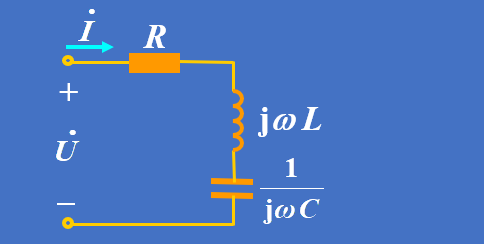
并联谐振：
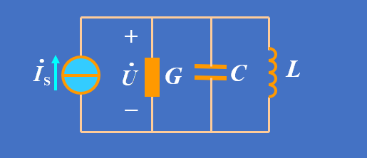
电磁场理论
基本原理
利用射频信号耦合（电感或者电磁耦合）
射频标签和读写器通过各自的天线构建起两者之间的非接触信息传输通道
雷达反射的传输特性
这种空间信息传输通道的性能完全由天线周围的场区特性决定，是电磁传播的基本规律
电感线圈的交变磁场
安培定理指出，电流流过一个导体时，在此导体的周围会产生一个磁场 。
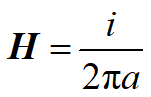
天线场
天线场的划分
[!note]
通常，根据观测点与天线的距离将天线周围的场划分为三个区域:
- 无功近场区(感应场）:又称为电抗近场区,是一种感应场
- 辐射近场区
- 辐射远场区
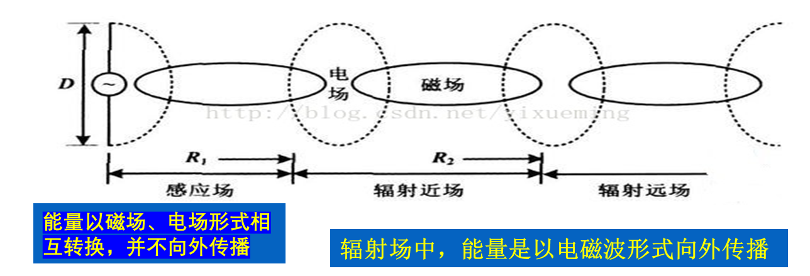
天线的方向性图
[!tip]
天线的方向性图是指该辐射区域中辐射场的角度分布, 公认的辐射近场区与远场区的分界距离R
- 对于天线而言，当天线的最大尺寸L小于波长时，天线周围只存在无功近场区与辐射远场区，没有辐射近场区。
- 无功近场区的外界约为
λ/2π，超过了这个距离，辐射场就占主要优势。通常将满足的天线称为小天线。
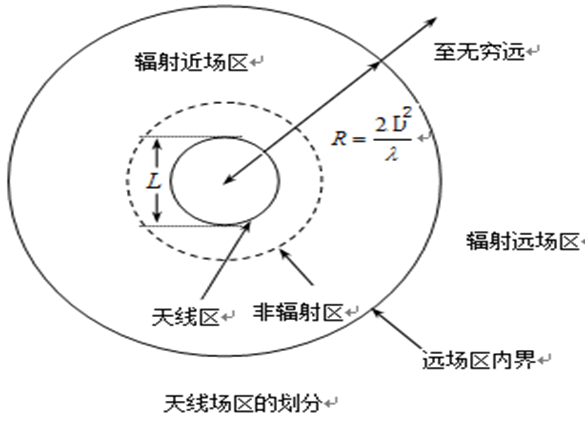
近场与远场的计算
- 根据观测点与天线的距离(与天线的最大尺寸有关）：
- 说明： R为观察点到天线的距离，D为天线的直径， λ为波长
天线尺寸< 波长 时， 近场边界
R= λ/2π天线尺寸 > 波长 时， 远场边界
R = 2(D^2)/λ
数据传输原理
读写器和标签之间的通信通过电磁波实现，按照通信距离可分为远场和近场。
读写器和标签之间数据交换方式：
- 负载调制：读写器和标签之间的天线能量交换方式类似于变压器结构，称为负载调制。（125kHz和13.56MHz射频识别）
- 反向散射调制：电磁波从天线向周围空间发射，到达目标的电磁能量一部分被目标吸收，另一部分以不同的强度散射到各个方向上去。反射能量的一部分最终返回发射天线
射频标签到读写器的能量传输
反向散射调制的能量传递
在距离读写器
R的射频标签处的功率密度S：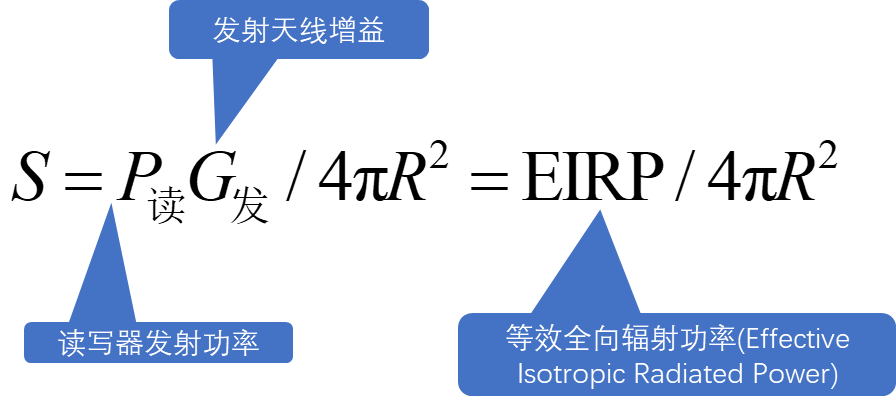
射频标签可吸收的功率
射频标签可吸收的最大功率与入射波的功率密度S成正比，可表示为
标签功耗越大，读写距离越短，性能越差。
射频标签能否工作主要由射频标签的工作电压来决定,限制了无源射频识别系统的识别距离，
射频标签到读写器的能量传输
射频标签返回的能量为
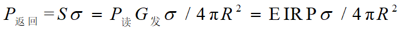
雷达散射截面σ
返回读写器的功率密度:
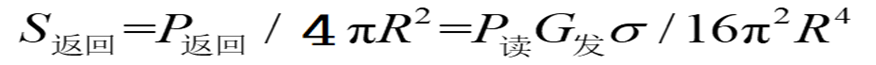
接收天线的有效面积
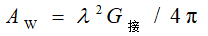
接收功率
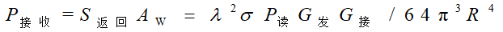
电感耦合方式的射频前端
综述
[!tip]
射频识别技术在工作频率13.56 MHz和小于135 kHz时，基于电感耦合方式（能量及信息传递以电感耦合方式实现），在更高频段基于雷达探测目标的反向散射耦合方式（雷达发射电磁波信号碰到目标后携带目标信息返回雷达接收机）
- 电感耦合方式的基础是电感电容（LC）谐振回路及电感线圈产生的交变磁场，它是射频卡工作的基本原理
- 基于雷达探测目标的反向散射耦合方式的基础是电磁波传播和反射的形成，它用于微波电子标签
- 实现射频能量和信息传递的电路称为射频前端电路，简称为射频前端
阅读器天线电路
在阅读器中，使用串联谐振回路
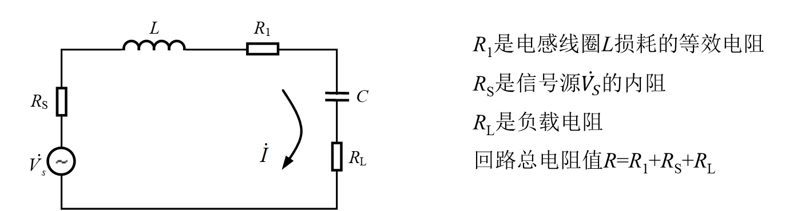
[!tip]
串联谐振回路适用于恒压源，即信号源内阻很小的情况。
并联谐振回路时，采用恒流源, 即信号源内阻很大的情况。
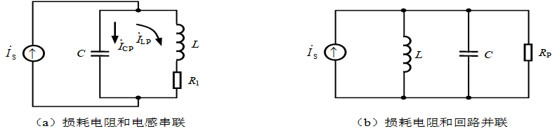
阅读器和应答器之间的电感耦合
- 当应答器进入阅读器产生的交变磁场时，应答器的电感线圈上就会产生感应电压，当距离足够近，应答器天线电路所截获的能量可以供应答器芯片正常工作时，阅读器和应答器才能进入信息交互阶段。
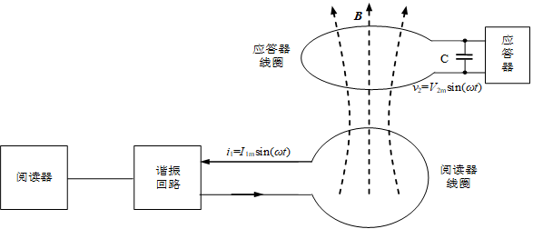
- 应答器直流电源电压的产生是通过整流器滤波
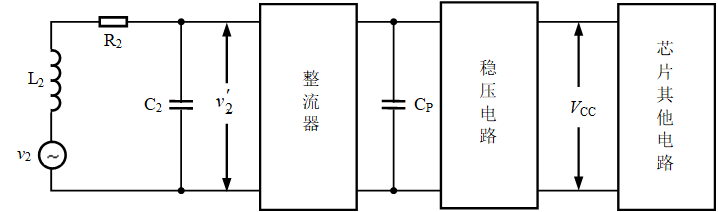
C_P-滤波电容，滤去高频信号; 同时为储能器件，较强负载能力
负载调制
- 应答器向阅读器的信息传送时采用
电阻负载调制
- 开关S用于控制负载调制电阻Rmod的接入与否，开关S的通断由二进制数据编码信号控制。
- 应答器的负载电阻值有两个对应值，即RL（S断开时）和RL与Rmod的并联值RL//Rmod（S闭合时）
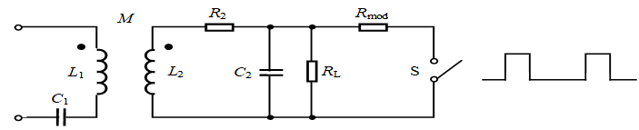
电容负载调制
电容负载调制是用附加的电容器Cmod代替调制电阻Rmod
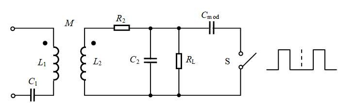
功率放大电路
- 功率放大电路位于RFID系统的阅读器中，用于向应答器提供能量
- 采用谐振功率放大器
- 在电感耦合RFID系统的阅读器中，常采用B，D和E类放大器
电磁兼容
电子产品的电磁兼容性（EMC）包含两方面：
- 一是电磁干扰（EMI）
- 二是抗电磁干扰的能力（EMS）。